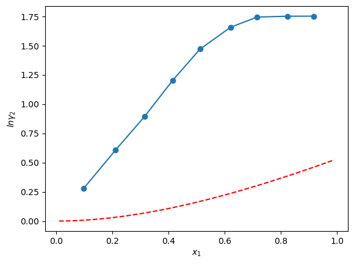
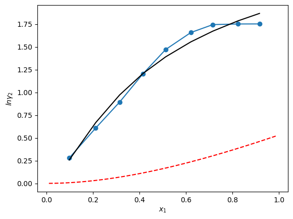
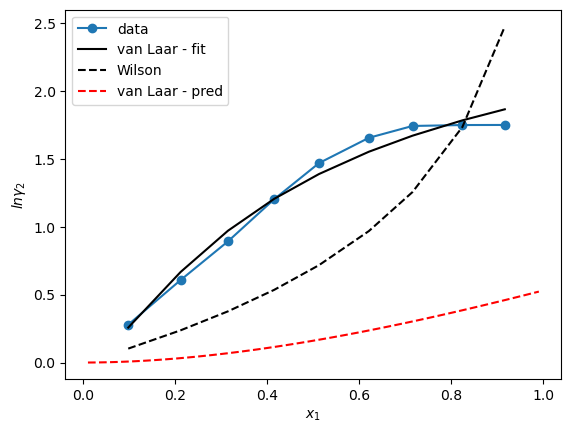

Applying our Thermodynamic Definitions to Mixtures#
The goal of this notebook is to apply our definitions for mixtures partial molar properties and activity coefficients. Note that our focus will be based on two separate approaches:
Activity coefficient expressions from Empirical correlations (the Redlich Keister Expression)
Activity coefficient expressions from Mixture Equations of State
Then we will compare the two approaches using real property data.
Activity Coefficients from Empirical Correlations#
Last time, we define the activity coefficient as given by:
where \(G_{ex} = N \underline{G}^{ex} = \underline{G}(T,P,\underline{x}) - \underline{G}_{im}(T,P,\underline{x})\)
Given a mixture whose Gibb’s Energy is given as:
Where do mixture properties come from?#
Measurements of the heat of mixing as a function of temperature can be readily used to estimate \(\underline{G}\) via the relationship,
Therefore by measuring \(\underline{H}(T,P,\underline{x})\), one can calculate \(\underline{G}\) of a mixture and fit the experimental data to the Redlich Keister Expression given as:
The result will be empirical correlations that can be used to tabulate the activity coefficients - note that the parameters of that empirical fit \(a_n\) do not have physical meaning, but can be stored for mixtures of certain types.
Determining whether a mixture is ideal:#
An ideal mixture is a mixture whose properties are given as: \(\underline{\theta}(T,P,\underline{x}) = \sum_i x_i\underline{\theta}_i(T,P)\)
Calculating the molar volume of a mixture from the Gibb’s Free Energy:#
From Ch. 6,
Evaluating, \(\bigg(\dfrac{\partial \underline{G}}{\partial P} \bigg)_{T,N}\), we can substitute:
\(\dfrac{\partial}{\partial P} \bigg|_{T,N}\bigg(x_1\underline{G}_1 + x_2\underline{G}_2 + RT(x_1\ln x_1 + x_2\ln x_2) +ax_1x_2\bigg)\)
after applying the operator, only \(\underline{G}_1\) and \(\underline{G}_2\) are functions of Pressure, therefore:
\(\bigg(\dfrac{\partial \underline{G}}{\partial P} \bigg)_{T,N} = x_1 \bigg(\dfrac{\partial \underline{G}_1}{\partial P} \bigg)_{T,N} + x_2 \bigg(\dfrac{\partial \underline{G}_2}{\partial P} \bigg)_{T,N}= x_1\underline{V}_1 + x_2\underline{V}_2\)
Calculating the Enthalpy of a mixture from the Gibb’s Free Energy:#
performing the substitution as before, we find: \(\dfrac{\partial}{\partial T}\bigg|_P\bigg(\dfrac{1}{T}\bigg(x_1\underline{G}_1 + x_2\underline{G}_2 + RT(x_1\ln x_1 + x_2\ln x_2) +ax_1x_2\bigg)\bigg)\)
this time, \(\dfrac{\underline{G}_1}{T}\), \(\dfrac{\underline{G}_2}{T}\), and \(\dfrac{a}{T}\) are functions of temperature so that the derivative becomes:
\(\underline{H} = -T^2 \bigg(x_1\dfrac{-\underline{H}_1}{T^2} + x_2\dfrac{-\underline{H}_2}{T^2}-\dfrac{a}{T^2}x_1x_2\bigg)\)
or
\(\underline{H} = x_1\underline{H}_1 + x_2\underline{H}_2 + \dfrac{a} x_1 x_2\)
An ideal mixture requires that \(\underline{H} = x_1\underline{H}_1 + x_2\underline{H}_2\), therefore the mixture is not ideal
We can further convince ourselves of this by calculating the partial molar enthalpy of this mixture:
\(\bar{H}_1(T,P,\underline{x}) = \bigg(\dfrac{\partial H}{\partial N_1}\bigg)_{T,P,N_{j\ne i}} = \underline{H}_1 + a x_2^2\)
For the mixture to be ideal, \(\bar{H}_1 = \underline{H}_1\)
Note:
This above equation is a correlative relationship for calculating activity coefficients called the one constant Margules expression
Developing Expressions for Activity and Fugacity Coefficients of species 1 and 2 in the mixture#
Lets use the expression above to calculate the activity coefficient. Returning to the definition of the activity coefficient, we can write:
so we need to find \(\underline{G}^{ex} = N\underline{G}^{ex} = N (a x_1 x_2) = a \dfrac{N_1 N_2}{N_1+N_2} \)
evaluating the derivative
\(\dfrac{\partial}{\partial N_1}\bigg|_{T,P,N_{2}}\bigg(a \dfrac{N_1 N_2}{N_1+N_2}\bigg)\)
we get:
\(\bar{G}_1^{ex} = a\bigg[\dfrac{N_2}{N_1+N_2} - \dfrac{N_1 N_2}{(N_1 + N_2)^2}\bigg] = a(x_2-x_1x_2) = ax_2^2\)
Therefore,
via a similar manipulation it is possible to show that:
Activity Coefficients from a Volumetric Equation of State#
Van Laar Theory#
We will see that empirical activity coefficient models abound and come in many flavors. Many of them are correlated to experimental data performed on mixtures (i.e., densities and heats of mixing) and therefore, they relay on the availability of experimental data for their accuracy.
The Theory of van Laar is one example of an activity coefficient model that can be calculated from the equation of state alone. This theory allows for the estimation of activity coefficients and thus equilibrium using only a volumetric equations of state. Its derivation is useful as it illustrates the use of calculus and first principle thermodynamics to derive an expression for a thermal variable.
Van Laar theory is based on two assumptions:
The binary mixture is composed of two species of similar size and energies of interaction
the van der Waals equation of state applies to both the pure fluid and the binary mixture.
The first assumption has the implication that \(\underline{S}^{ex}=0\) and \(\underline{V}^{ex}=0\)
so that \(\underline{G}^{ex} = \underline{U}^{ex} + P\underline{V}^{ex} - T\underline{S}^{ex} \sim \underline{U}^{ex}\)
Based on this assumption, we can then compute the molar excess Gibb’s free energy by harnessing our thermodynamic definition:
and by taking a strategic path to compute \(\Delta_{mix} \underline{U}\). That path consists of the following steps:
(I) from \(T_1\), \(P_1\) we have \(x_1\) moles of species \(1\) and \(x_2\) moles of species \(2\). We take an isothermal pathway to the ideal gas state for both species in isolation such that:#
(II) Next we form an ideal gas mixture of species 1 and 2. The result of this mixing produces no excess internal energy relative to the ideal gas mixture.#
(III) Finally we return the mixture back to \(T_1\) and \(P_1\) isothermally.#
Summing up the two steps, and applying the definition to the VDW equation of state, we find that:
For liquids, \(\underline{V}_i \sim b_i\), so the above can be simplified further to:
Calculating the Activity Coefficients#
To calculate the activity coefficients, we must find \(\bar{G}_1^{ex}\) and \(\bar{G}_2^{ex}\). The procedure is the same as above:
applying the mixing rules from van Der Waal, \(a_{mix} = x_1^2 a_1^2 + x_2^2 a_2^2 + 2x_1x_2 a_{12}\) and \(b_{mix} = x_1 b_1 + x_2 b_2\)
the above becomes:
which simplifies to:
writing the above in terms of mole fractions:
With some algebraic effort, the above can be simplified to the traditional form of the van Laar equations provided that \(\kappa_{ij}=0\):
where \(\alpha = \dfrac{b_1}{RT}\bigg[\dfrac{\sqrt{a_1}}{b_1}-\dfrac{\sqrt{a_2}}{b_2}\bigg]^2\) and \(\beta = \dfrac{b_2}{RT}\bigg[\dfrac{\sqrt{a_1}}{b_1}-\dfrac{\sqrt{a_2}}{b_2}\bigg]^2\)
The advantage of the van Laar equations is that they have a functional form that has a firm grounding in physics, this makes them superior to the Margules equations which are essentially polynomial fits to experimental data.
Example of van Laar Equations with Activity Coefficients - Ammonia and Water System#
When ammonia is added to water it dissolves releasing heat, it also generates ions which are solvated by a water cage surrounding the ammonium cation. The result is that its solution is highly non-ideal and practically difficult for the van Laar Equation predicted from the individual species alone to be predictive. We can see that if we plot the activity of the ammonia water system taken from this paper.
import numpy as np
import matplotlib.pyplot as plt
R = 8.314#J/(mol*K)
activity = np.transpose([(0.09756097560975607, 1.3220399305364636),
(0.21138211382113825, 1.8366384065130346),
(0.31436314363143625, 2.443185298653521),
(0.41463414634146345, 3.3314596251303343),
(0.5121951219512196, 4.349989541895558),
(0.6205962059620597, 5.2411281040738285),
(0.7154471544715446, 5.718921814192971),
(0.8238482384823849, 5.758292636711616),
(0.915989159891599, 5.761577693510011)])##activity of ammonia in water at 60 C
## Ammonia
MW1 = 17.031 #g/mol
Tc1 = 405.6#K
Pc1 = 11.28*10**6#Pa
Vc1 = 0.0724/1000#(m^3/mol)
w1 = 0.250
a1 = 27*(R*Tc1)**2/(64*Pc1)
b1 = 0.125*(R*Tc1)/Pc1
## Water
MW2 = 18.015 #g/mol
Tc2 = 647.3#K
Pc2 = 22.048*10**6#Pa
Vc2 = 0.056/1000#(m^3/mol)
w2 = 0.229
a2 = 27*(R*Tc2)**2/(64*Pc2)
b2 = 0.125*(R*Tc2)/Pc2
x1 = np.arange(0.01,1.0,0.01)
def lngamma1(x1,alpha,beta):
x2 = 1 - x1
return alpha/(1+alpha*x1/(beta*x2))**2
def lngamma2(x1,alpha,beta):
x2 = 1 - x1
return beta/(1+beta*x2/(alpha*x1))**2
T = 60 + 273.15
alpha = b1/(R*T)*(np.sqrt(a1)/b1 - np.sqrt(a2)/b2)**2
beta = b2/(R*T)*(np.sqrt(a1)/b1 - np.sqrt(a2)/b2)**2
print(alpha,beta)
#plt.plot(x1,lngamma1(x1,T),'-r')
plt.plot(x1,lngamma2(x1,alpha,beta),'--r')
plt.plot(activity[0],np.log(activity[1]), marker='o')
plt.xlabel(r'$x_1$')
plt.ylabel(r'$ln\gamma_2$')
0.6511165980932356 0.5316261394034939
Text(0, 0.5, '$ln\\gamma_2$')

The correlation above is not great, so we can try to fit alpha and beta to get better agreement w/ experimental data.
from scipy.optimize import curve_fit
def lngamma2_vanlaar(x1,alpha,beta):
x2 = 1 - x1
#alpha = b1/(R*T)*(np.sqrt(a1)/b1 - np.sqrt(a2)/b2)**2
#beta = b2/(R*T)*(np.sqrt(a1)/b1 - np.sqrt(a2)/b2)**2
return beta/(1+beta*x2/(alpha*x1))**2
popt, cov = curve_fit(lngamma2_vanlaar, activity[0],np.log(activity[1]))
print(popt)
vanlaar = lngamma2_vanlaar(activity[0],*popt)
plt.plot(activity[0],np.log(activity[1]), marker='o')
plt.plot(activity[0],vanlaar,'k')
plt.plot(x1,lngamma2(x1,alpha,beta),'--r')
plt.xlabel(r'$x_1$')
plt.ylabel(r'$ln\gamma_2$')
[10.27693453 1.9315719 ]
Text(0, 0.5, '$ln\\gamma_2$')

The fit is better, but of course can be improved further. Let’s write the Wilson Equation
Wilson Equation#
An example is the Wilson equation which gives the molar excess Gibb’s Free Energy as:
which has the activity coefficients:
Let’s fit the Wilson Equation to the ammonia-water system to see if we can improve the fit.#
def lngamma1_wilson(x1,a,b):
x2 = 1 - x1
#alpha = b1/(R*T)*(np.sqrt(a1)/b1 - np.sqrt(a2)/b2)**2
#beta = b2/(R*T)*(np.sqrt(a1)/b1 - np.sqrt(a2)/b2)**2
return -np.log(1 - x2*b) + x2*(x2*a/(1-x1*a)-x1*b/(1-x2*b))
def lngamma2_wilson(x1,a,b):
x2 = 1 - x1
#alpha = b1/(R*T)*(np.sqrt(a1)/b1 - np.sqrt(a2)/b2)**2
#beta = b2/(R*T)*(np.sqrt(a1)/b1 - np.sqrt(a2)/b2)**2
return -np.log(1 - x1*a) - x1*(x2*a/(1-x1*a)-x1*b/(1-x2*b))
popt, cov = curve_fit(lngamma2_wilson,
activity[0],
np.log(activity[1]))
print(popt)
wilson = lngamma2_wilson(activity[0],*popt)
plt.plot(activity[0],np.log(activity[1]), marker='o',label = 'data')
plt.plot(activity[0],vanlaar,'-k', label = 'van Laar - fit')
plt.plot(activity[0],wilson,'--k', label = 'Wilson')
plt.plot(x1,lngamma2(x1,alpha,beta),'--r', label = 'van Laar - pred')
plt.xlabel(r'$x_1$')
plt.ylabel(r'$ln\gamma_2$')
plt.legend()
[1. 1.]
C:\Users\richa\AppData\Local\Temp\ipykernel_21944\3583261276.py:11: RuntimeWarning: invalid value encountered in log
return -np.log(1 - x1*a) - x1*(x2*a/(1-x1*a)-x1*b/(1-x2*b))
<matplotlib.legend.Legend at 0x2643d71e890>
